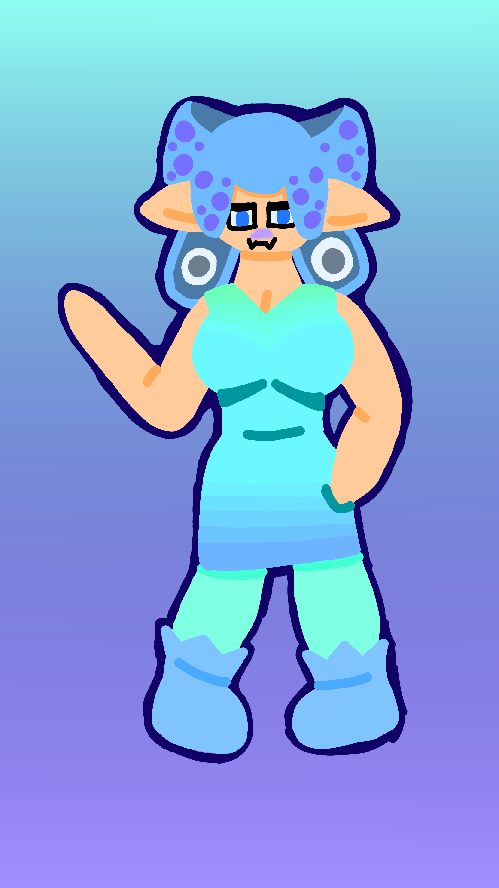

i like this one even more, but there are some problems with it. i will improve!
made with krita

i tried a new lineless style! i was quite happy with this one!
made with krita
i cant stop. this one still is not as good as the last one but i still love it!
made with krita
i did it again and this one is way better, and i love her (^///^)
made with krita

a drawing i made cuz i was bored. its my sona in my old jasab style, and goth :0
made with krita
a drawing i made to vent CW-CARTOON GORE made with krita

a little drawing of my sona as a siren! bad shadows cuz i was lasy and got the consocwences made with krita
a geometric drawing of some like shape angel??? i will get better at making dummy lines so that stuff can be more strait made with krita

a geometric drawing of nautilus cuz i was board made with krita
a little geometric drawing i made for a browser backround made with krita
hex clicker! hexes: 0